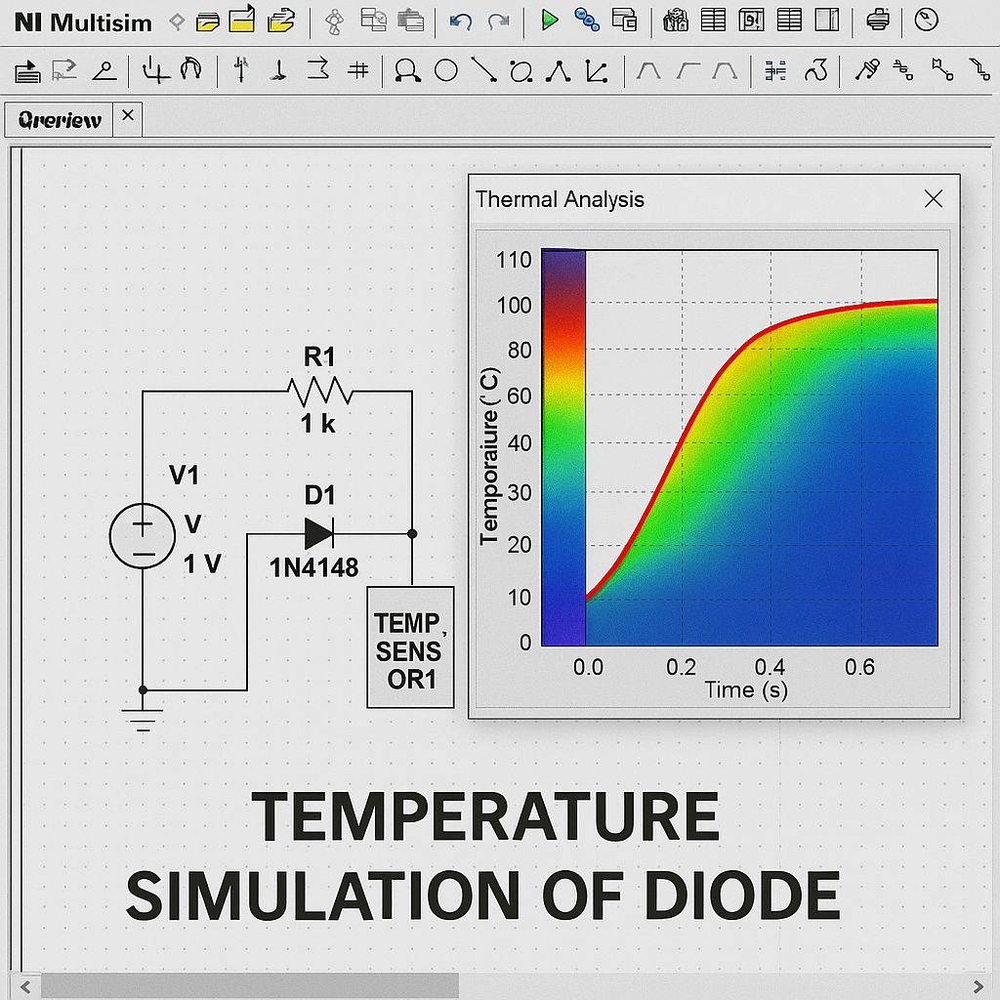

Multisim: Entorno, primeros pasos y simulaciones
Introducción
Multisim (14.3) es un simulador de circuitos que permite crear esquemáticos, configurar parámetros SPICE, medir voltajes y corrientes con instrumentación virtual y evaluar el desempeño bajo distintos tipos de análisis. En clase se mostró cómo insertar y editar componentes (valor, encapsulado, coeficiente de temperatura), y cómo relacionar la simulación con la fabricación de prototipos. También se explicó que cada componente tiene un modelo SPICE que replica su comportamiento real según su hoja de datos, considerando materiales semiconductores, dopaje y temperatura de operación.
Objetivos
- Reconocer el entorno y barras de herramientas de Multisim.
- Realizar los primeros pasos para construir y medir un circuito básico.
- Distinguir los tipos de simulación (interactiva, transitoria, frecuencia, Fourier y temperatura).
- Identificar las propiedades físicas de los componentes eléctricos más comunes y sus unidades.
Entorno de Multisim
Interfaz y bibliotecas: ventana de esquemático para colocar y cablear componentes. Las bibliotecas incluyen resistencias, capacitores (cerámicos, electrolíticos y de tántalo), diodos comunes y Zener, transistores BJT y MOSFET, así como circuitos integrados analógicos y digitales. El profesor señaló la importancia de respetar prefijos como micro, nano y pico para evitar errores.
Propiedades y SPICE: cada componente incluye un modelo SPICE con parámetros eléctricos y térmicos que permiten simular condiciones reales, incluyendo variaciones de temperatura o frecuencia.
Tipos de simulación
Interactiva
Observación directa durante la ejecución; útil para depurar y validar estados lógicos o comportamiento de LEDs.
Transitoria (vs. tiempo)
Analiza la respuesta de voltaje o corriente en función del tiempo, como la carga de un capacitor o la forma de un pulso.
Frecuencia (Bode)
Permite observar la ganancia y fase de un circuito a distintas frecuencias. Es esencial para el diseño de filtros o amplificadores.
Fourier (armónicos)
El análisis de Fourier descompone una señal compleja en componentes senoidales. Se utiliza para estudiar distorsión armónica en señales no senoidales y para diseñar filtros que conserven la frecuencia fundamental y atenúen armónicos no deseados.
Temperatura
Evalúa el rendimiento del circuito cuando cambian las condiciones térmicas. Útil para observar variaciones de V, I o frecuencia a 27 °C, 60 °C o 100 °C.
Ejemplos de simulación
Circuito RC (transitorio)
Objetivo: observar carga y descarga del capacitor aplicando un pulso.
Procedimiento: configura fuente de pulso, mide Vc con osciloscopio y ajusta R o C
para ver cambios en la constante de tiempo.
Filtro RC (Bode)
Objetivo: trazar magnitud y fase en función de la frecuencia.
Procedimiento: usa análisis de AC Sweep, define rango logarítmico y compara
la frecuencia de corte calculada con la simulada.
Fourier de onda cuadrada
Objetivo: visualizar armónicos impares y su atenuación 1/n.
Procedimiento: genera onda cuadrada con fuente, ejecuta análisis de Fourier
y observa amplitudes relativas de armónicos.
Mediciones con multímetro
Objetivo: medir V, I y R en nodos específicos.
Procedimiento: coloca el instrumento, conecta puntas, ejecuta simulación y abre la ventana
del multímetro para leer valores precisos en DC o AC.
Temperatura en diodo

Objetivo: evaluar el desplazamiento de la curva I–V con la temperatura.
Procedimiento: ajusta la temperatura del análisis, ejecuta barrido de DC y
compara tensiones de umbral y corriente de fuga.
Conclusiones y notas
Multisim es una herramienta para comprender el comportamiento eléctrico de los circuitos antes de su fabricación física. Permite experimentar con variables, realizar mediciones precisas y observar efectos de temperatura, frecuencia y transitorios. Un diseño bien simulado previene errores en laboratorio y mejora la comprensión de conceptos fundamentales.